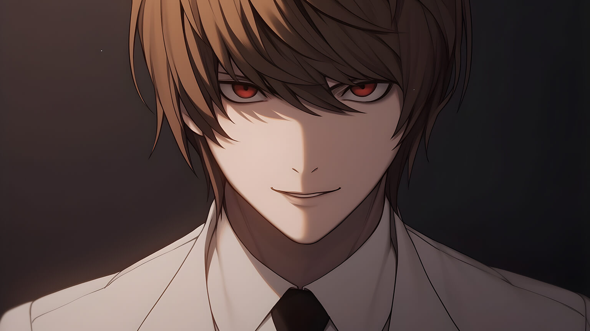
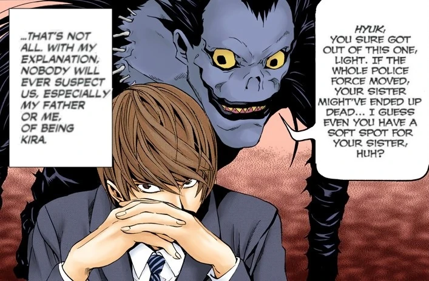
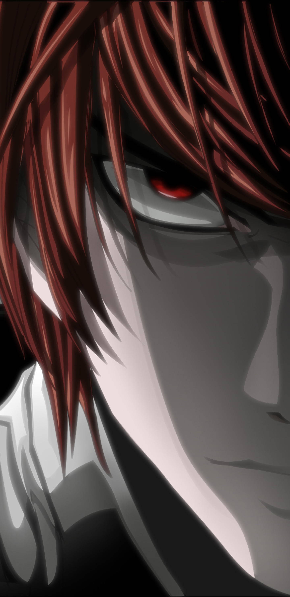
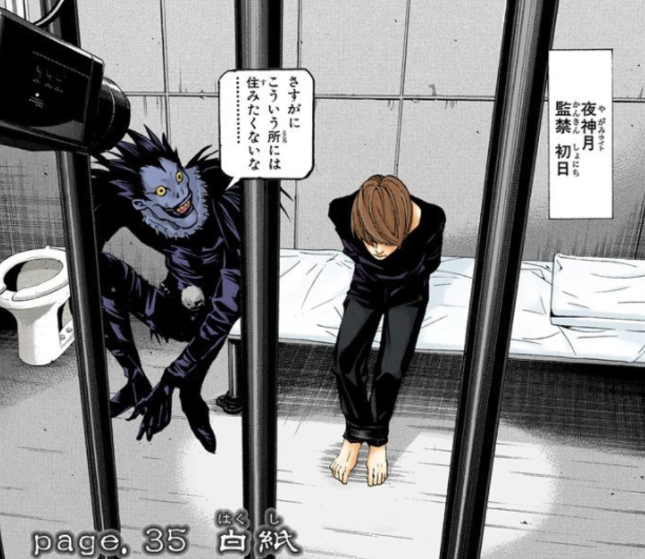
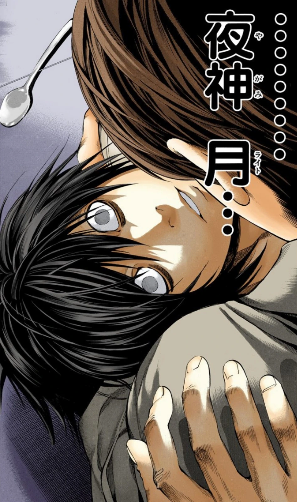
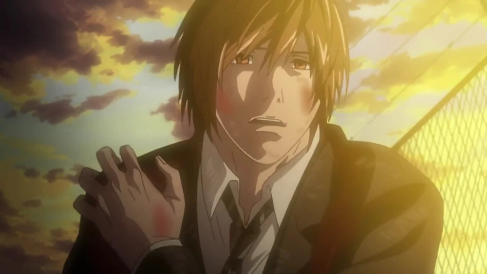
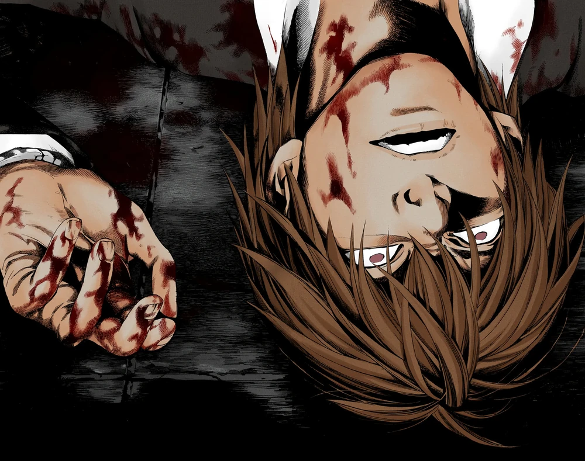
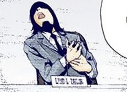
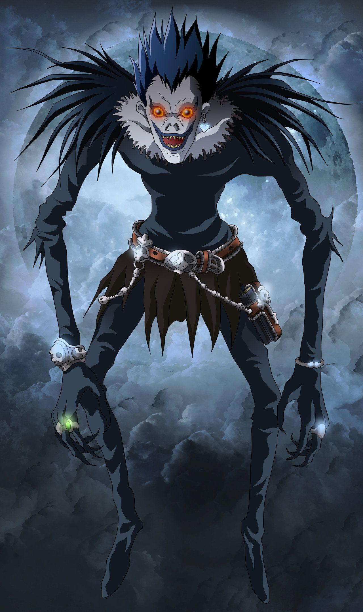

"Je veux que le monde sache que j’existe, qu’il y a quelqu’un là-dehors qui porte un jugement juste sur les méchants."
LIGHT YAGAMI

Galerie d'images










Citations de Light Yagami
"Regardez autour de vous, et tout ce que vous voyez, ce sont des gens dont le monde serait mieux privé."
"En toutes choses, on ne peut gagner qu’avec la seule défense. Pour gagner, il faut attaquer."
"Écoutez ceci : je ne suis pas seulement Kira, je suis aussi le dieu du nouveau monde !"
"Dans des circonstances normales, les humains auraient dû continuer à évoluer en tant que plus grandes créatures sur cette terre, mais en réalité, nous étions en train de régresser. Un monde pourri. Politique, droit, éducation... Y avait-il quelqu’un dans les parages qui pouvait corriger ce monde ? Mais quelqu’un devait le faire."